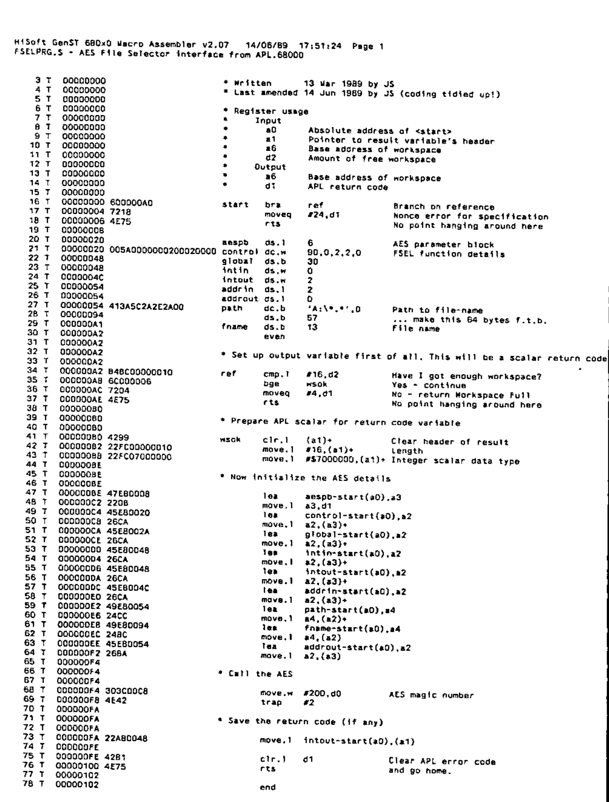

Using the GEM file selector in APL.68000
Vector 6:3, page 113
Transcribed from the printed issue; not yet reviewed. Read it in the PDF of the issue, page 113
An Interface Program for APL.68000 on the Atari ST¶
The GEM file selector is a program built into GEM which allows application programs to present the user with a dialogue resulting in the selection of a file, the path and name of which are returned to the application program for further processing. Anybody who has used any serious Atari software (for instance the word-processing program that usually comes bundled with the machine) will know how useful the file selector is (and also how terrible the Atari one can be!). It would be most useful if this facility were available from APL, but APL.68000 does not have a built-in interface for it.
There is a way around this apparent omission: write your own interface. This is not difficult if you are an assembler programmer, because MicroAPL have thoroughly provided a way of doing just that, by means of an auxiliary processor [1]. However, not everybody is an assembler programmer, hence this article. (You may say, after reading my assembler code, that I’m not an assembler programmer either. It’s a fair cop - I admit it!)
How to use the function¶
The cover function is called <FSEL>. It takes character left and right arguments and returns an explicit result. This result is the full name of the selected file including the path, unless ‘cancel’ was specified, or if an error occurred in the AES call, in which case the null vector is returned. If an APL error occurs (such as WS FULL or NONCE ERROR) the function will stop in the usual manner: this can be trapped and dealt with by the function that calls <FSEL>. The only ‘subroutine’ function is <TRANSLATE> from the TOOLS workspace (supplied with APL.68000) which is used to convert the character strings from ASCII to the internal format used by APL.68000 and vice versa.
When using the file selector the idea is that the options that were selected last time are used as the starting point for next time. These options can, of course, be over-ridden by appropriate use of the left and right arguments to the cover function <FSEL>. However, in order to save preferences from one call to the next, the assembler code is held in a global variable <FSELmc>, rather than being initialised by the cover function every time it is called, which is the normal way of dealing with auxiliary processors. Of course, you can re-initialise the code whenever you like by calling the setup function: an ideal time to do this is on entry to the workspace, in the latent function. It is incumbent on the application programmer to ensure that the global variable does not become corrupted in any way.
The left argument to the function is the initial path name to be used. If this is omitted or null, the program uses the path that was returned last time the file selector was used, or ‘A:\*.*’ if it hasn’t been used since initialisation. This path can be up to 63 characters long, which is the maximum path length in DOS (but be careful, because there are a few peculiarities with path lengths on the Atari).
The right argument to the function is the initial filename to be used. If this is null, the program uses the filename that was returned last time the file selector was used, or it displays a blank filename if it hasn’t been used since initialisation. The maximum filename length is 12 characters with an optional embedded period which, if required or used, must be in the right place or results may not be what you expect.
Notes¶
I used HiSoft’s Devpac2 Assembler (also known as GenST Macro Assembler) to assemble the machine code for this auxiliary processor. HiSoft also supply a replacement file selector which is much better than the Atari offering. Further details from HiSoft at The Old School, Greenfield, Bedford MK45 5DE.
The assembler code must be relocatable, and it can be got into the workspace by reading the assembled file by the usual Native File-handling techniques, and dropping the first 28 bytes (the program header, which isn’t required in APL). The auxiliary processor mechanism will accept the assembled code in any APL data format: I converted it to integer for use in <SETUP-FSELmc>, but for this program it is best sent to the AP in character, because you can manipulate characters more easily in the cover function.
If anybody wants to use these functions and doesn’t want to run the gauntlet of keying all those numbers (and making all those mistakes!) I will be pleased to supply them with a suitable workspace if a diskette and the appropriate return postage is forwarded to me. For what it’s worth, the assembler source code is also available.
Reference¶
[1] A description of the Auxiliary Processor Mechanism appears in a paper by Philip van Cleave in the APL83 Conference Proceedings. This paper is summarised at the end of Chapter 4 of MicroAPL’s APL Language Manual.
APL Listings¶
Function FSEL
∇Z←PATH FSEL FNAME;AP;C;⎕IO
[1] ⍝ Call up the GEM AES File selector. Written 14 Mar 1989 by JS.
[2] ⍝ Allows the user to enter any garbage he/she likes.
[3] ⍝ If PATH or FNAME are null then use preferences from last time
[4] ⍝ (that's why the machine code for AP is kept in <FSELmc>)
[5] ⍎(2≠⎕NC'FSELmc')/'''VALUE ERROR: Variable <FSELmc> required''⎕ERS 11'
[6] ⎕IO←0 ⋄ →(0=⍴FNAME)/∆1
[7] FSELmc[148+⍳13]←13↑(1 TRANSLATE FNAME),13⍴⎕AV[0]
[8] ∆1:→(2≠⎕NC'PATH')/∆2 ⋄ →(0=⍴PATH)/∆2
[9] FSELmc[84+⍳63]←63↑(1 TRANSLATE PATH),63⍴⎕AV[0]
[10] ∆2:C←1 ⎕SVO'AP DAT*' ⋄ FSELmc[147 161]←⎕AV[0]
[11] AP←FSELmc ⋄ C←AP ⋄ Z←''
[12] →(C≤1)/0 ⋄ →(~2|C)/0 ⍝ Null vector if error or cancel
[13] ⍝ If no filename then exit
[14] →(0=⍴Z←(Z⍳⎕AV[0])↑Z←0 TRANSLATE FSELmc[148+⍳13])/0
[15] ⍝ Try to decipher path
[16] C←(C⍳⎕AV[0])↑C←(0 TRANSLATE FSELmc[84+⍳63]),⎕AV[0]
[17] ⍎(0≠+/'\'=C)/'Z←((-(⌽C)⍳''\'')↓C),Z ⋄ →0'
[18] ⍝ If we have no backslash we must have 'x:', so
[19] ⍎(':'≠(2↑C)[1])/'Z←'''' ⋄ →0'
[20] Z←C[0 1],Z ⍝ Drive-id, colon, filename ONLY
∇
Function SETUP∆FSELmc
∇SETUP∆FSELmc;A
[1] ⍝ This code initializes the machine code for the AP that calls the
[2] ⍝ GEM file-selector. Various strings are set to their defaults.
[3] A←1610612896 1914195573 0 0 0 0 0 0 5898240 131074 0 0 0 0 0 0 0 0 0 0
[4] A←A,1094343722 774504448 0 0 0 0 0 0 0 0 0 0 0 0 0 0 0 0 0 0 46268 16
[5] A←A,1811939334 1912884853 1117332220 16 586942208 18408 533003
[6] A←A,1172832288 650790376 2762442 1172832328 650790376 4728522 1172832332
[7] A←A,650791400 5514444 1239941268 613172712 5514890 809238728 1312957096
[8] A←A,4735617 1316290560 0
[9] ⍝
[10] FSELmc←4 ⎕DR A ⍝ Do it in character
∇
Assembler Code¶
